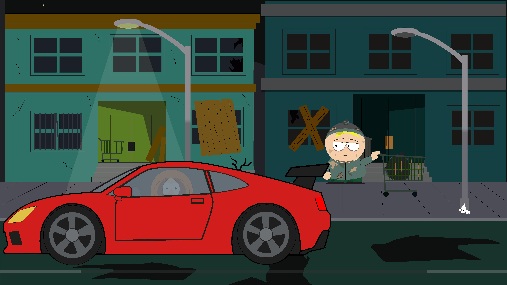

Scène réalisée en première année de DEUST WMI : une rue de nuit
délabrée, avec des immeubles aux fenêtres brisées, des lampadaires qui
éclairent le trottoir, un caddie abandonné et une voiture de sport
rouge au premier plan. Le travail porte sur la mise en scène, les
ambiances de lumière et le style graphique de la série.

Scène d'illustration en vectoriel sur Illustrator.
Site web de présentation réalisé dans le cadre de mon DEUST Webmaster
et métiers de l'internet : HTML sémantique, plusieurs pages reliées
entre elles, versionné avec Git et publié sur GitHub.
Affiche recto-verso réalisée sur InDesign pour une entreprise de
serrurerie fictive. Le recto présente le slogan et les horaires sur
une photo de porte, et le verso détaille les services.